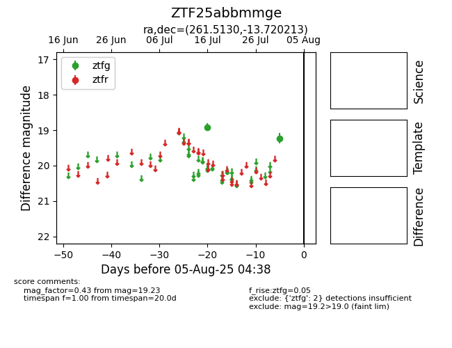

Target ZTF25abbmmge at 2025-08-05 04:38, see:
FINK: fink-portal.org/ZTF25abbmmge
Lasair: lasair-ztf.lsst.ac.uk/objects/ZTF25abbmmge
ALeRCE: alerce.online/object/ZTF25abbmmge
alt names
ZTF25abbmmge (ztf,fink)
coordinates:
equatorial (ra, dec) = (261.5130,-13.72021)
galactic (l, b) = (10.5648,+11.92122)
photometry
last ztfg=19.23
2 ztfg detections
